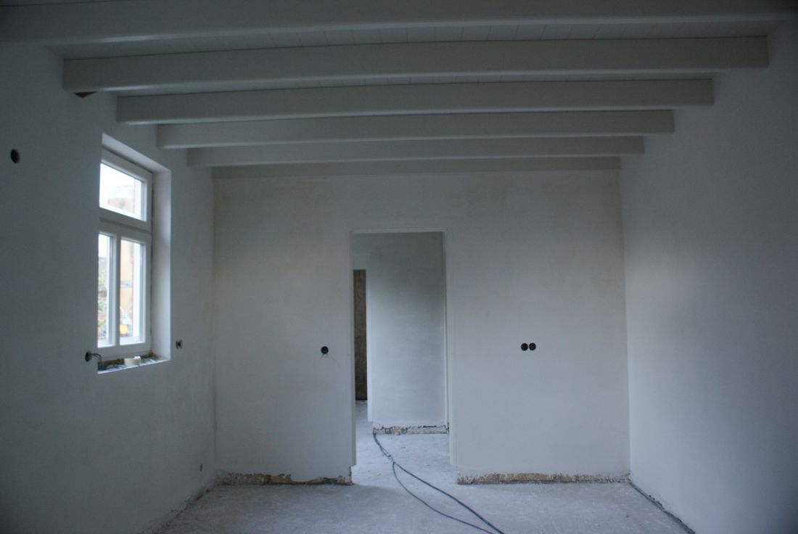
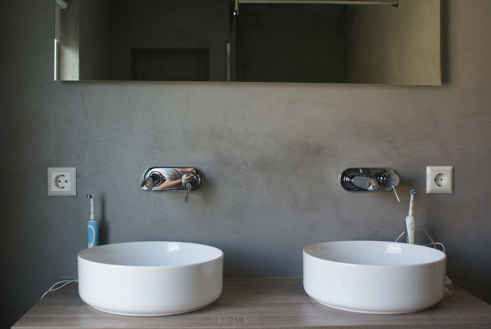
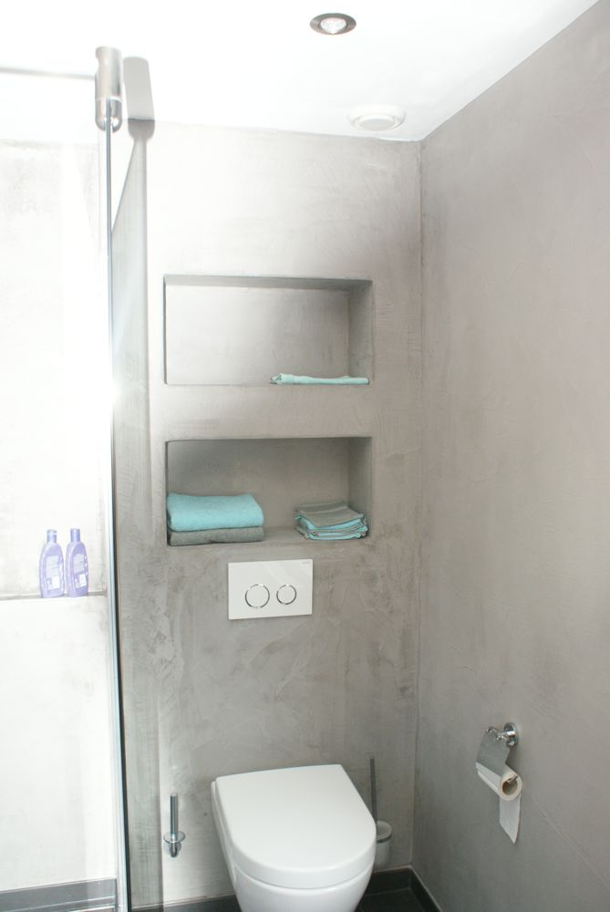
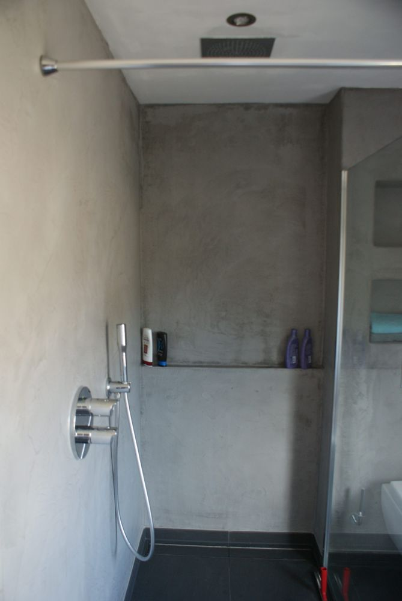
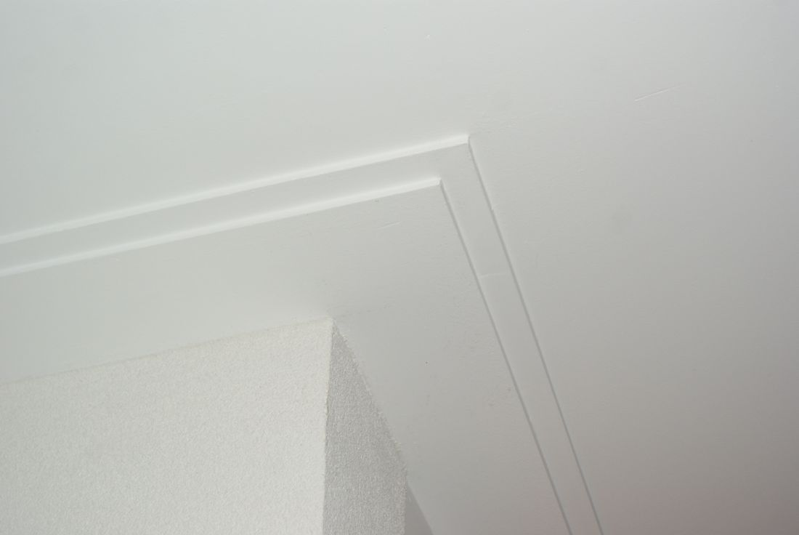
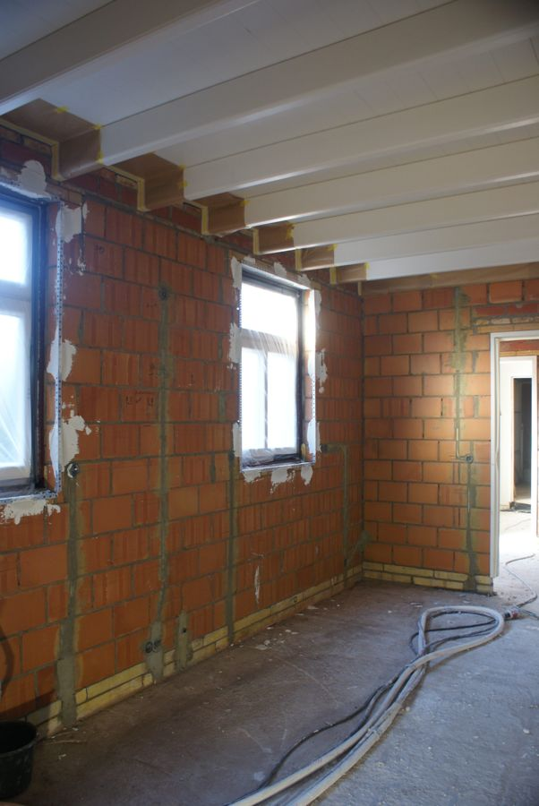
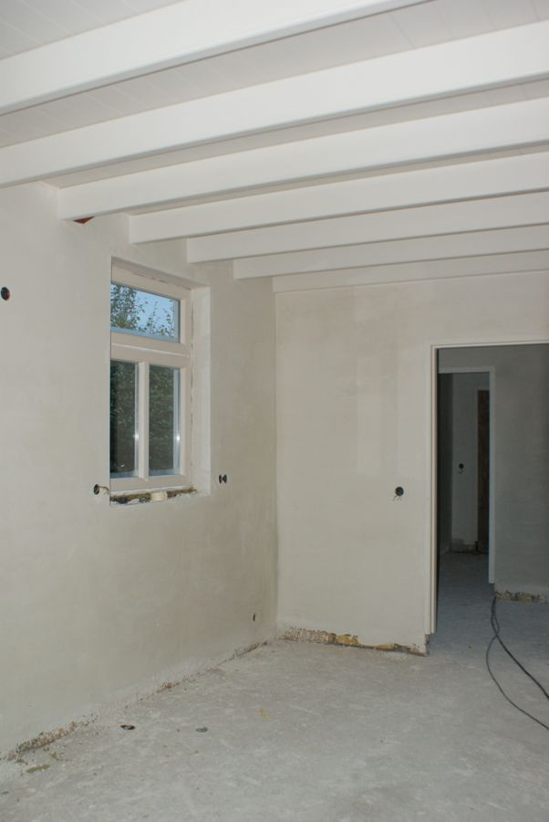
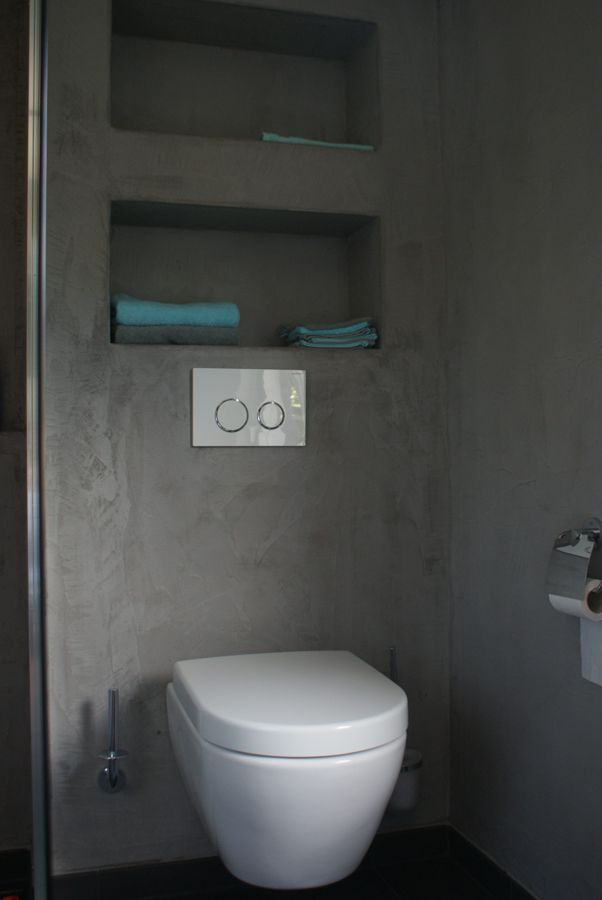
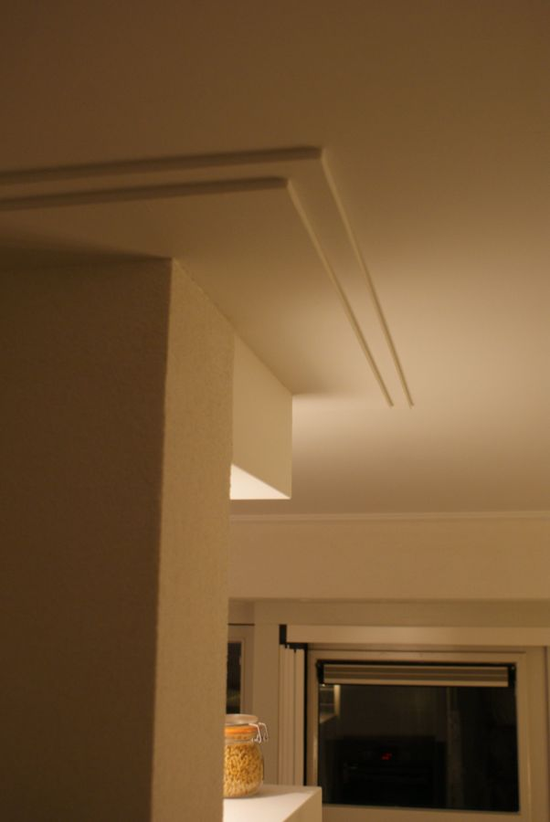
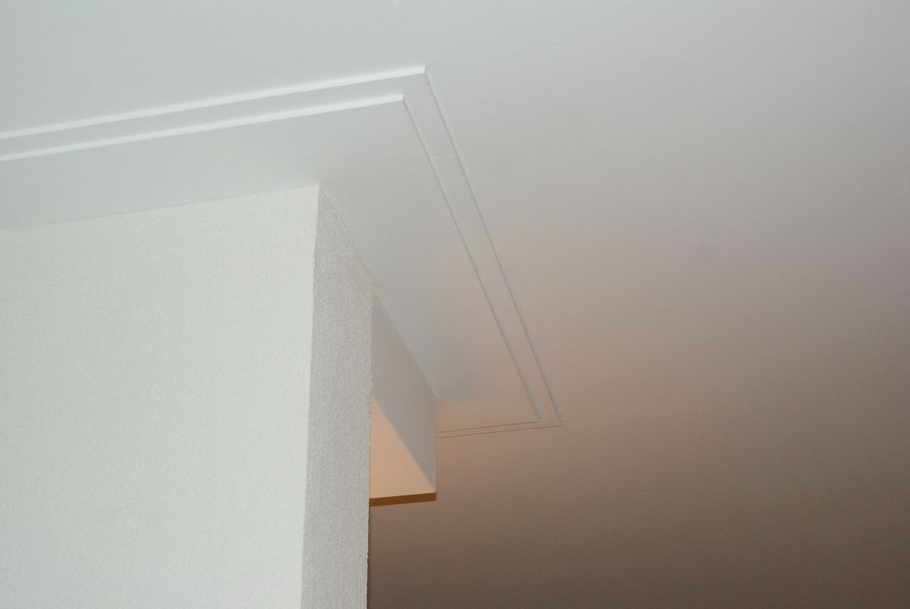

Traditioneel stucwerk
Van perfect gladde muren tot de structuur die u wilt: grove of fijne korrel, schuurwerk of spachtelputz. Ook voor het spacken van uw plafond.
Binnen en buiten


Strakke wanden en plafonds, betonlook en lijstwerk. Stukadoor uit Rijsbergen, aan het werk van Dordrecht tot Turnhout.
Van een kleine klus tot een heel huis. Specifieke wensen? Vraag gerust, we denken mee over een oplossing voor uw situatie.

Van perfect gladde muren tot de structuur die u wilt: grove of fijne korrel, schuurwerk of spachtelputz. Ook voor het spacken van uw plafond.

Populair en veelzijdig. Vaak gebruikt in badkamers, maar ook voor meubels zoals een tafel- of aanrechtblad.

Strakke, platte lijsten op plafonds, of juist sierlijke lijsten en ornamenten.


Dezelfde kamer, voor en na het stucwerk. Vooraf geven we u advies op maat over de afwerking die bij uw ruimte past.
U krijgt altijd eerst een vrijblijvende offerte, voor kleinere opdrachten en grotere projecten.
Betonlook in de badkamer en lijstwerk op het plafond.



Voor het stukadoren van woningen van 2 jaar en ouder geldt het verlaagde btw-tarief van 9%. Dat geldt voor woningen waar particulieren permanent mogen wonen, ook als ze tijdelijk leegstaan. Wilt u weten of u in aanmerking komt? Neem gerust even contact met ons op.
Thijs Hendrickx heeft van zijn hobby zijn beroep gemaakt en is al geruime tijd actief als stukadoor. Naast kwaliteit staat bij ons vooral betrouwbaarheid hoog in het vaandel.
"Datgene doen op het afgesproken tijdstip en conform de gemaakte afspraken is voor ons de sleutel tot succes."Thijs Hendrickx, eigenaar
U kunt ons inschakelen voor advies en een vrijblijvende offerte, voor kleinere opdrachten en grotere projecten.
Werkgebied: van Dordrecht tot Turnhout, zoals Rijsbergen, Zundert, Alphen, Chaam en Baarle-Nassau.
"Thijs is al meerdere keren bij mij geweest. Een hele vriendelijke en deskundige man."
Marco Schoenmakers · GoogleVertel kort wat u wilt laten doen. We nemen zo snel mogelijk contact met u op.